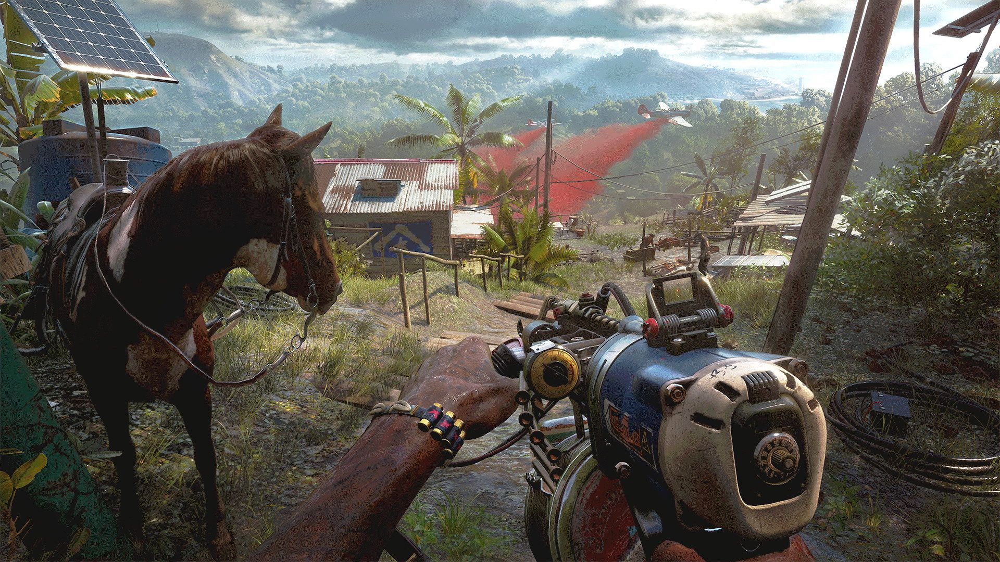
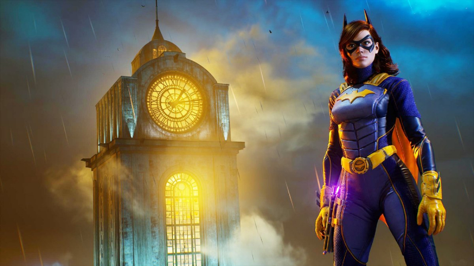
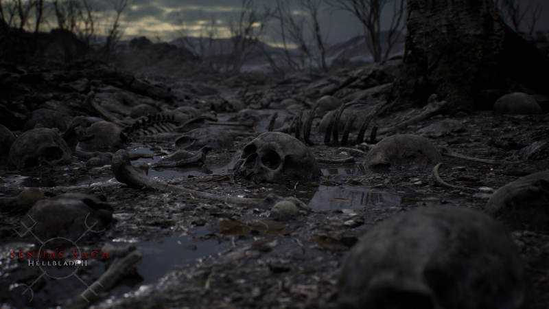
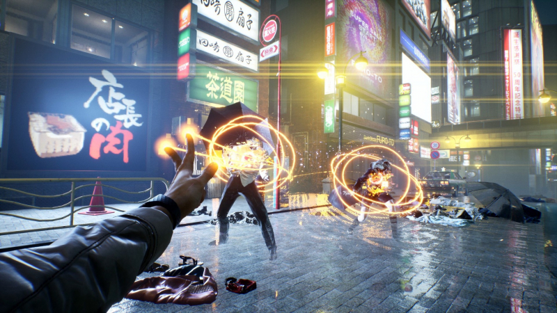

ITFlex
Самые ожидаемые игры 2021!

Far Cry 6
Местом действия Far Cry 6 станет вымышленное островное государство Яра (явно подсмотренное на Кубе), которое возглавляет Антон Кастильо, сыгранный актёром Джанкарло Эспозито. Отец Антона, ранее правивший страной, был убит во время революции, что сильно повлияло на мировоззрение героя — он уверен, что острову необходим тотальный контроль. На выборах он победил путём подтасовки результатов и продолжает дело отца, обучая своего сына Диего тем же принципам, по которым жил сам.

Gotham Knights
Создатели Batman: Arkham Origins очень долго не рассказывали о своём следующем крупном проекте, но не так давно прервали молчание. Их новая игра, Gotham Knights, действие которой разворачивается во вселенной Batman: Arkham, расскажет историю сразу четырёх главных героев: Бэтгёрл, Найтвинга, Красного Колпака и Робина.

Senua’s Saga: Hellblade II
Во время The Game Awards 2019 неожиданно показали дизайн Xbox Series X и почти сразу же состоялся анонс сиквела Hellblade. Дебютный трейлер впечатлил графикой и заставил аудиторию усомниться в том, что игра действительно так выглядит, однако показанное воспроизводилось на игровом движке в реальном времени — вероятно, финальный продукт будет выглядеть даже лучше.

Ghostwire: Tokyo
Во вселенной Ghostwire: Tokyo все жители столицы Японии таинственным образом исчезли, и город населили духи из другого мира. Главный герой, по неизвестным причинам обладающий сверхъестественными способностями, пытается очистить Токио от призраков и сталкивается с группой людей в масках хання — те помогут ему выяснить, что случилось с городом.